材料研究 · 日常材料与先进材料
日常常见材料
Corrosion-resistant, high strength, silver metallic luster, food-safe
Tableware, kitchen sinks, water bottles
Pantone 877 C (Silver Metallic)
Reflective cool silver tone, perfectly restores stainless steel's natural metallic appearance
Stainless steel 304 is the most widely used iron-chromium-nickel alloy metal. Its chromium content forms a self-repairing anti-rust film on the surface, making it resistant to water, vinegar and weak acid erosion. It is hard and durable, so it dominates kitchen supplies like spoons, pots and water bottles. Electropolishing is its core post-processing technology, which eliminates tiny surface scratches and upgrades its silver metallic gloss to match Pantone 877 C metallic silver.
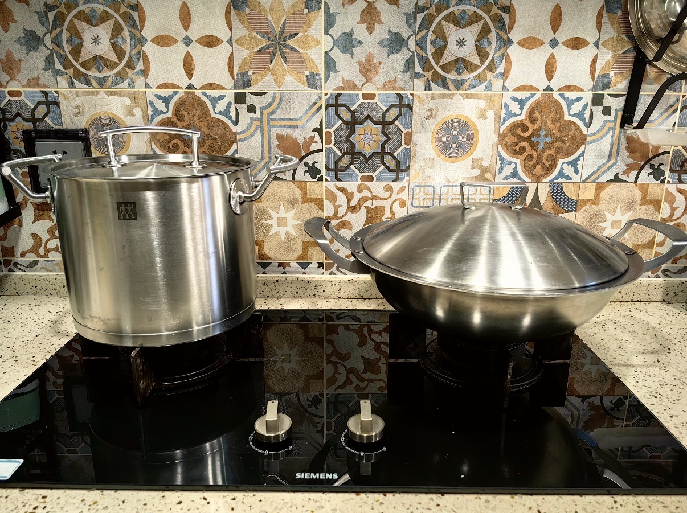
图片 3-1
Lightweight, heat-resistant, non-toxic, translucent white
Food storage boxes, disposable cups, lunch containers
Pantone White 11-0601 TCX (Bright White)
Clean milky translucent white matching raw PP plastic's base tone
PP plastic is a non-polar thermoplastic plastic, with a heat resistance up to 120°C, so it can be safely used in microwave food containers. Raw PP is natural milky white, corresponding to Pantone cloud white. Hot stamping post-processing can add colored or metallic patterns on its surface without damaging the plastic body, which is widely used for printed logos on lunch boxes.
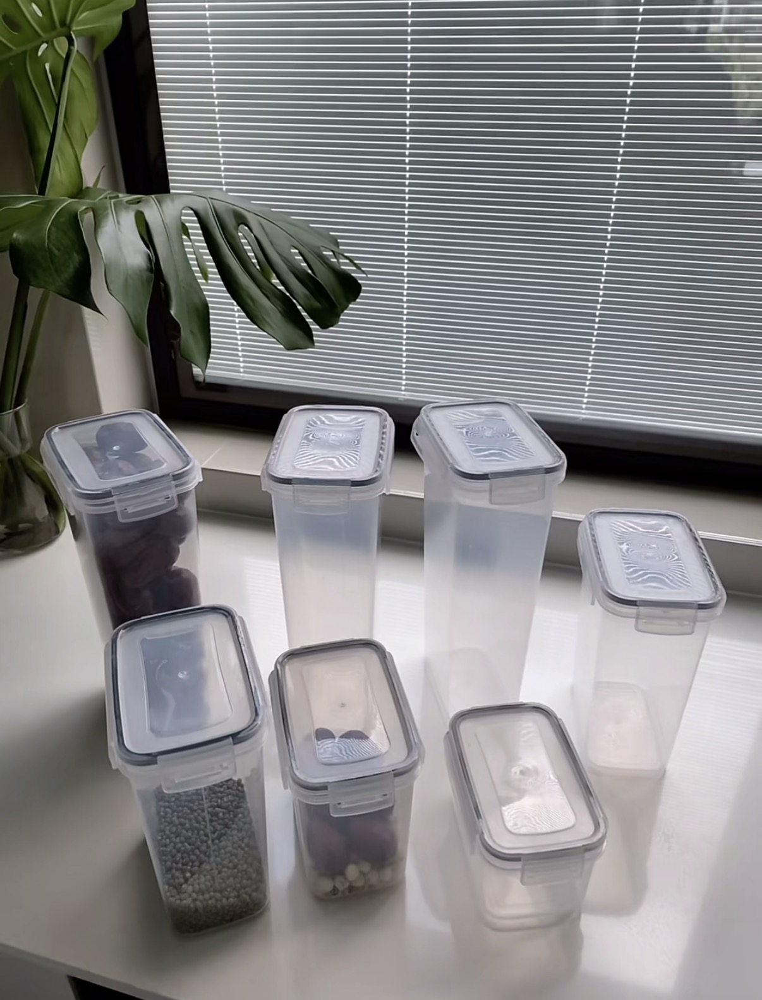
图片 3-2
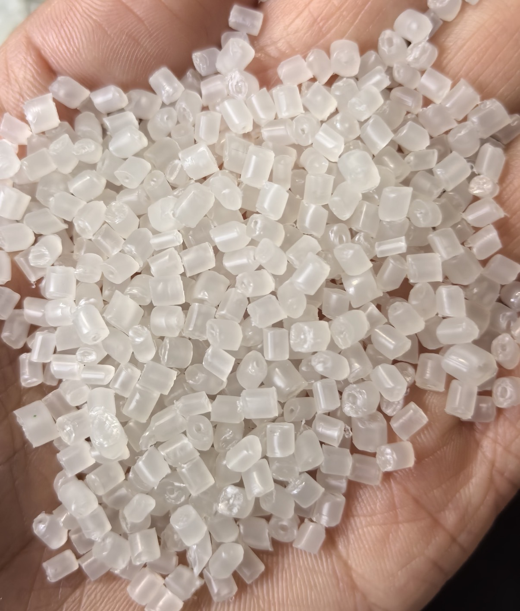
图片 3-3
Ultra-light, high tensile strength, black woven texture
Sports rackets, bicycle frames, phone casings
Pantone Black 6 C
Deep matte black that fits carbon fiber's woven dark surface
This composite material uses carbon fiber cloth as reinforcement and epoxy resin as matrix. It is lighter than aluminum but stronger than steel. Its natural woven black surface matches Pantone Black 6 C matte black. It replaces metal in lightweight daily goods such as badminton rackets and lightweight electric bike frames, greatly reducing product weight.
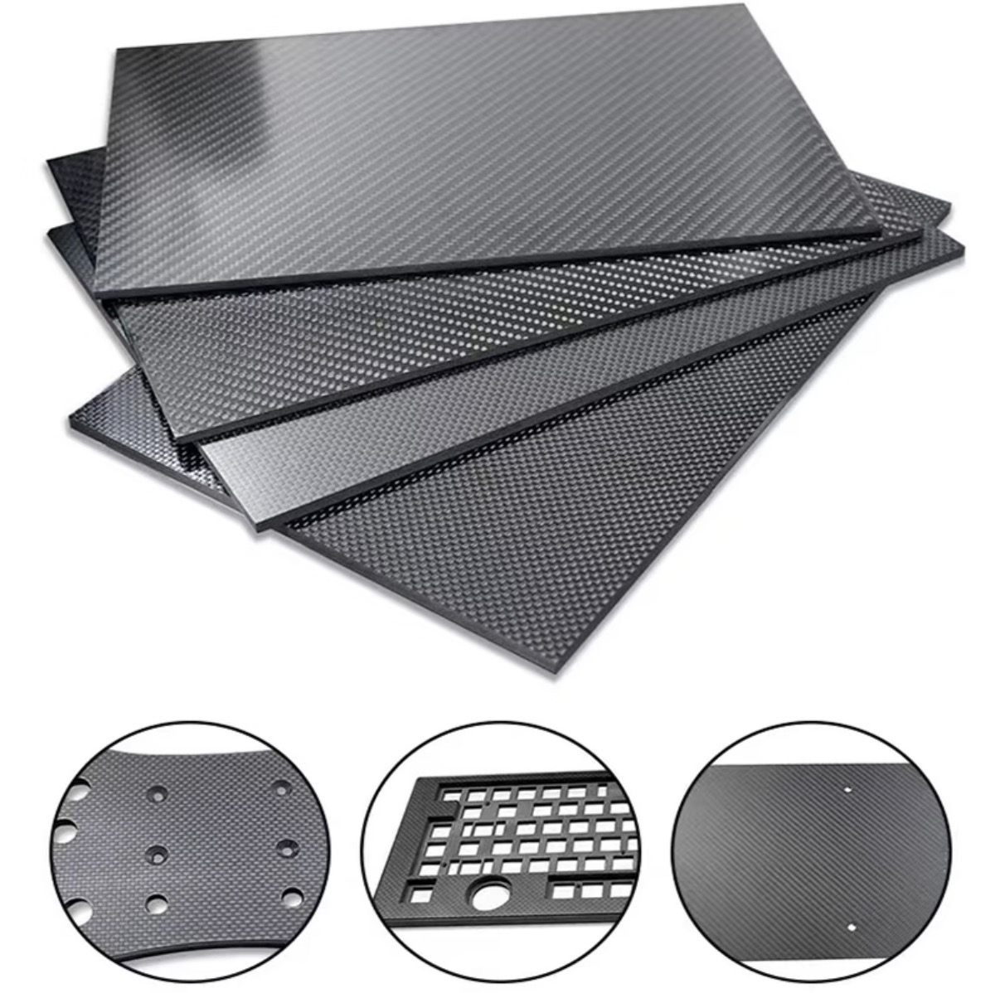
图片 3-4
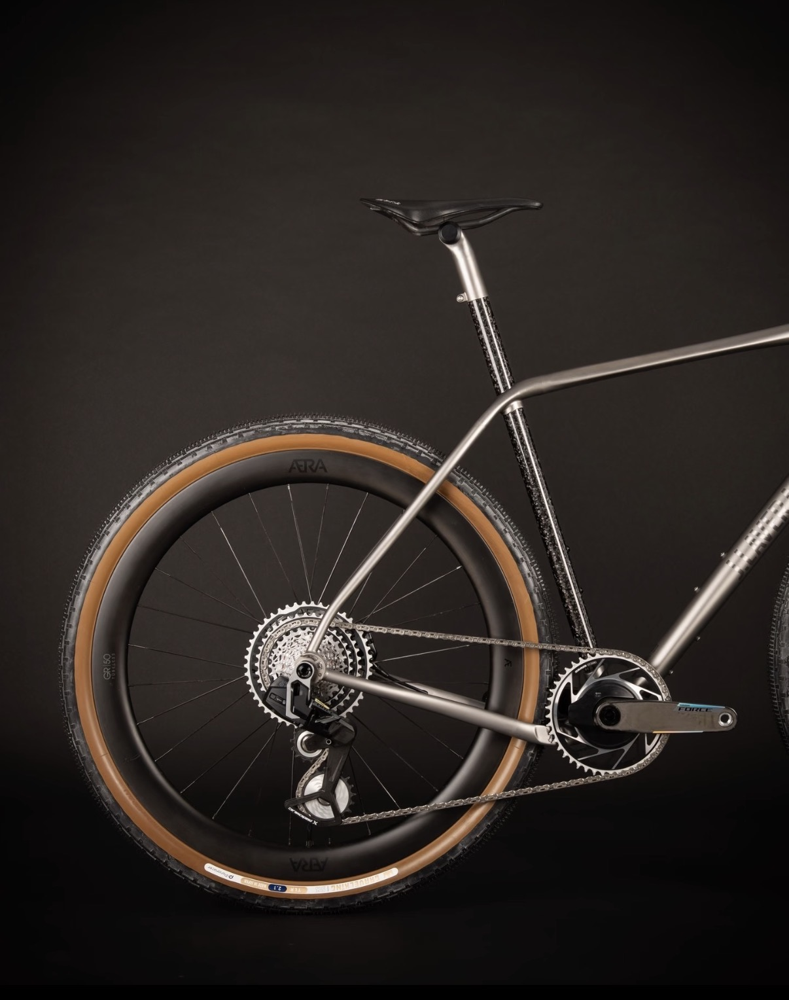
图片 3-5
两种新型先进材料
Super low density, ultra-high thermal insulation, porous translucent
Aerospace thermal shielding, building energy-saving insulation, cold chain packaging
Pantone 11-0102 TCX (Cloud White, faint semi-transparent off-white)
Known as "the lightest solid on earth", aerogel is made of porous silicon dioxide network. It blocks heat transfer almost completely, so it is used for high-end thermal insulation: aerospace rocket heat shields, wall thermal insulation boards, and low-temperature cold box liners. Its porous semi-transparent off-white tone is consistent with Pantone cloud white.
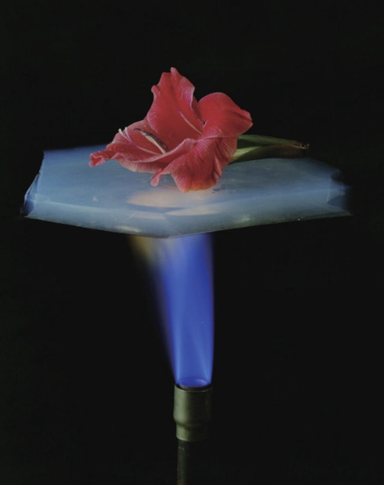
图片 3-6
Excellent electrical conductivity, flexible, thin metallic gray film
Flexible touch screens, wearable biosensors, electromagnetic shielding
Pantone 423 C (Cool Gray 11, subtle metallic gray)
MXene is a 2D layered conductive material. It can be made into ultra-thin flexible films that conduct electricity while bending freely. It is applied to foldable screen touch layers, wrist heart rate sensors, and mobile phone electromagnetic shielding films. Its thin film presents a uniform cool gray matching Pantone 423 C.
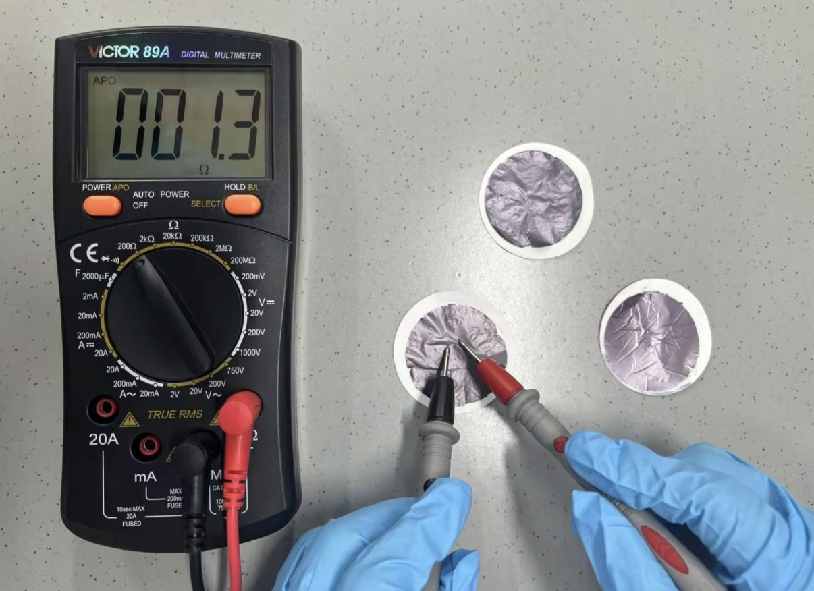
图片 3-7
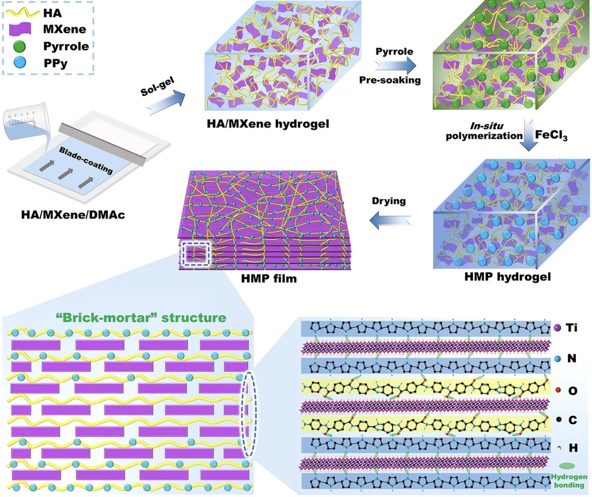
图片 3-8
后处理方法
Degreasing → electrolytic polishing → neutralization → drying
Remove surface burrs, form smooth passivation film, enhance corrosion resistance and gloss
Brighter Pantone 877 C with stronger metallic reflection
Metal Electropolishing: Specialized for stainless steel, improves surface smoothness and anti-rust performance, brightens Pantone 877 C metallic silver effect.
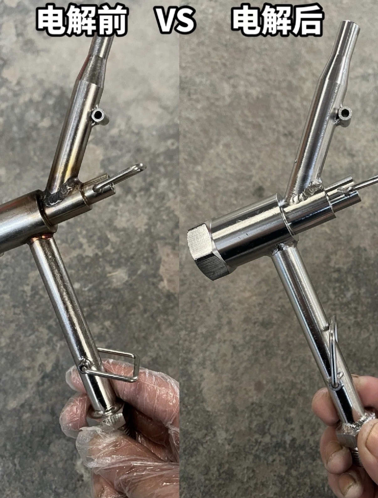
图片 3-9
Surface cleaning → heat transfer foil hot pressing → cooling shaping
Attach metallic/colored decorative layers to plastic surface for logo & decoration
Pantone 1235 C (Gold)
Plastic Hot Stamping: Surface decoration for PP plastic, adds customizable Pantone color patterns without chemical corrosion.
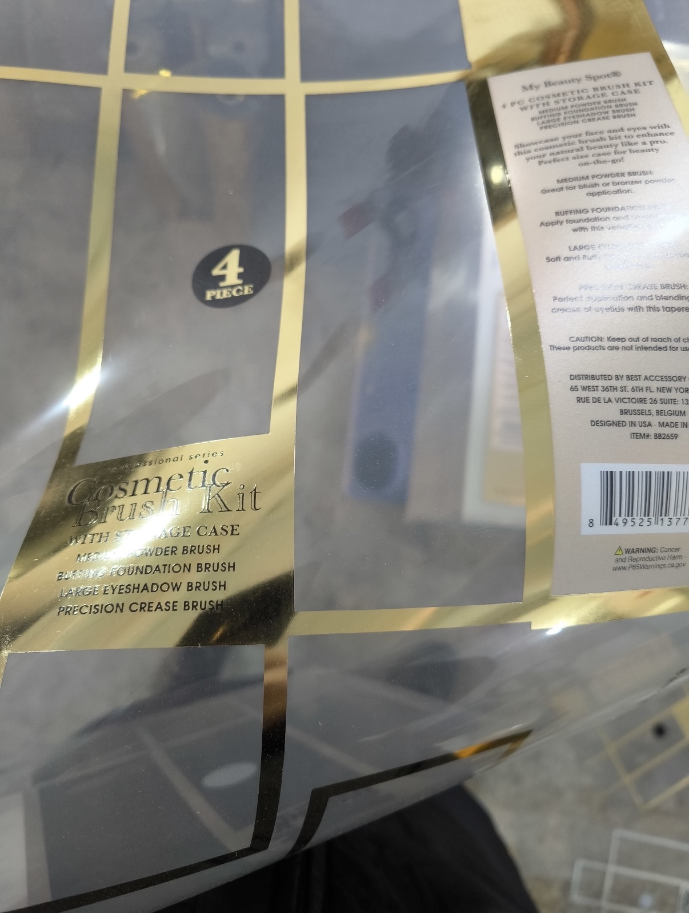
图片 3-10
Sanding → first coat wood oil → sanding → second top coat
Highlight natural wood grain, waterproof & anti-crack, retain wood's matte texture
Pantone 15-1242 TCX (Warm Oak Beige)
Wood Oil Finishing: Universal wood finishing craft, locks wood moisture, displays natural grain, and forms warm wood tones like Pantone 15-1242 oak beige.
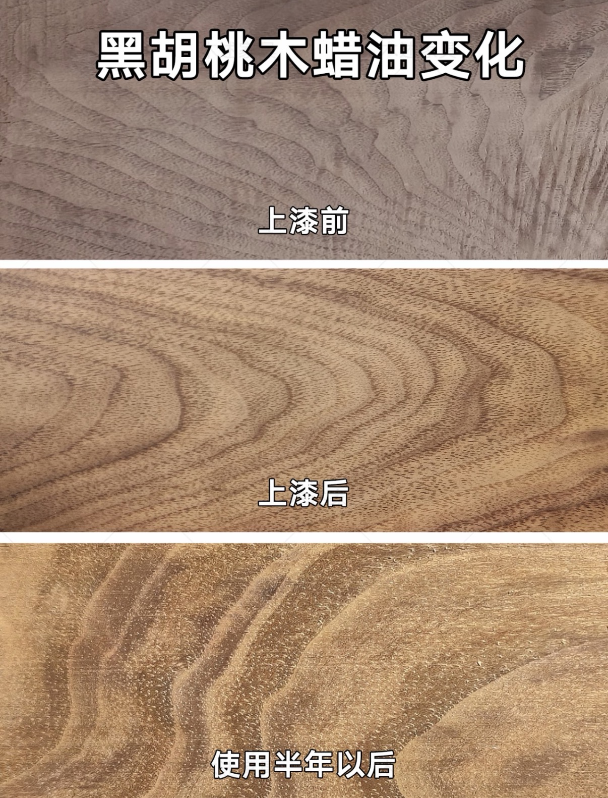
图片 3-11